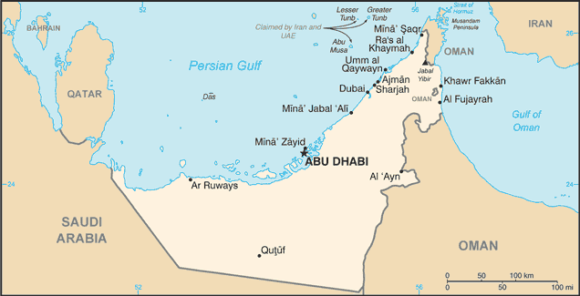
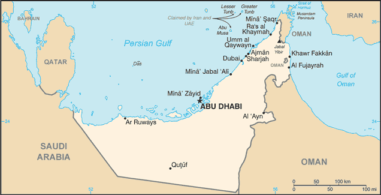

-
Introduction :: United Arab Emirates
-
Background:The Trucial States of the Persian Gulf coast granted the UK control of their defense and foreign affairs in 19th century treaties. In 1971, six of these states - Abu Dhabi, 'Ajman, Al Fujayrah, Ash Shariqah, Dubayy, and Umm al Qaywayn - merged to form the United Arab Emirates (UAE). They were joined in 1972 by Ra's al Khaymah. The UAE's per capita GDP is on par with those of leading West European nations. For more than three decades, oil and global finance drove the UAE's economy. However, in 2008-09, the confluence of falling oil prices, collapsing real estate prices, and the international banking crisis hit the UAE especially hard. The UAE essentially avoided the "Arab Spring" unrest seen elsewhere in the Middle East in 2010-11 and in an effort to stem potential unrest, the government announced a multi-year, $1.6-billion infrastructure investment plan for the poorer northern emirates and aggressively pursued advocates of political reform. The UAE in recent years has played a growing role in regional affairs. In addition to donating billions of dollars in economic aid to help stabilize Egypt, the UAE was one of the first countries to join the Defeat-ISIS coalition, and is a key partner in a Saudi-led military campaign in Yemen.
-
Geography :: United Arab Emirates
-
Location:Middle East, bordering the Gulf of Oman and the Persian Gulf, between Oman and Saudi ArabiaGeographic coordinates:24 00 N, 54 00 EMap references:Middle EastArea:total: 83,600 sq kmland: 83,600 sq kmwater: 0 sq kmcountry comparison to the world: 116Area - comparative:slightly larger than South Carolina; slightly smaller than MaineLand boundaries:total: 1,066 kmborder countries (2): Oman 609 km, Saudi Arabia 457 kmCoastline:1,318 kmMaritime claims:territorial sea: 12 nmexclusive economic zone: 200 nmcontiguous zone: 24 nmcontinental shelf: 200 nm or to the edge of the continental marginClimate:desert; cooler in eastern mountainsTerrain:flat, barren coastal plain merging into rolling sand dunes of vast desert; mountains in eastElevation:mean elevation: 149 melevation extremes: 0 m lowest point: Persian Gulf1527 highest point: Jabal YibirNatural resources:petroleum, natural gasLand use:agricultural land: 4.6% (2011 est.)arable land: 0.5% (2011 est.) / permanent crops: 0.5% (2011 est.) / permanent pasture: 3.6% (2011 est.)forest: 3.8% (2011 est.)other: 91.6% (2011 est.)Irrigated land:923 sq km (2012)Population distribution:population is heavily concentrated to the northeast on the Musandam Peninsula; the three largest emirates - Abu Dhabi, Dubai, and Sharjah - are home to nearly 85% of the populationNatural hazards:frequent sand and dust stormsEnvironment - current issues:air pollution; rapid population growth and high energy demand contribute to water scarcity; lack of natural freshwater resources compensated by desalination plants; land degradation and desertification; waste generation, beach pollution from oil spillsEnvironment - international agreements:party to: Biodiversity, Climate Change, Climate Change-Kyoto Protocol, Desertification, Endangered Species, Hazardous Wastes, Marine Dumping, Ozone Layer Protectionsigned, but not ratified: Law of the SeaGeography - note:strategic location along southern approaches to Strait of Hormuz, a vital transit point for world crude oil
-
People and Society :: United Arab Emirates
-
Population:9,701,315 (July 2017 est.) (July 2018 est.)
note: the UN estimated the country's total population was 9,400,145 as of mid-year 2017; immigrants make up more than 88% of the total population, according to UN data (2017)
country comparison to the world: 93Nationality:noun: Emirati(s)adjective: EmiratiEthnic groups:Emirati 11.6%, South Asian 59.4% (includes Indian 38.2%, Bangladeshi 9.5%, Pakistani 9.4%, other 2.3%), Egyptian 10.2%, Philippine 6.1%, other 12.8% (2015 est.)Languages:Arabic (official), Persian, English, Hindi, UrduReligions:Muslim (official) 76%, Christian 9%, other (primarily Hindu and Buddhist, less than 5% of the population consists of Parsi, Baha'i, Druze, Sikh, Ahmadi, Ismaili, Dawoodi Bohra Muslim, and Jewish) 15% (2005 est.)note: represents the total population; about 85% of the population consists of noncitizens
Age structure:0-14 years: 14.39% (male 724,904 /female 671,524)15-24 years: 7.64% (male 408,376 /female 332,986)25-54 years: 70.45% (male 5,297,201 /female 1,537,300)55-64 years: 6.05% (male 499,579 /female 87,037)65 years and over: 1.47% (male 106,739 /female 35,669) (2018 est.)population pyramid: The World Factbook Field Image ModalMiddle East :: United Arab Emirates Print
The World Factbook Field Image ModalMiddle East :: United Arab Emirates Print Image DescriptionThis is the population pyramid for United Arab Emirates. A population pyramid illustrates the age and sex structure of a country's population and may provide insights about political and social stability, as well as economic development. The population is distributed along the horizontal axis, with males shown on the left and females on the right. The male and female populations are broken down into 5-year age groups represented as horizontal bars along the vertical axis, with the youngest age groups at the bottom and the oldest at the top. The shape of the population pyramid gradually evolves over time based on fertility, mortality, and international migration trends.
Image DescriptionThis is the population pyramid for United Arab Emirates. A population pyramid illustrates the age and sex structure of a country's population and may provide insights about political and social stability, as well as economic development. The population is distributed along the horizontal axis, with males shown on the left and females on the right. The male and female populations are broken down into 5-year age groups represented as horizontal bars along the vertical axis, with the youngest age groups at the bottom and the oldest at the top. The shape of the population pyramid gradually evolves over time based on fertility, mortality, and international migration trends.
For additional information, please see the entry for Population pyramid on the Definitions and Notes page under the References tab.Dependency ratios:total dependency ratio: 17.4 (2015 est.)youth dependency ratio: 16.2 (2015 est.)elderly dependency ratio: 1.2 (2015 est.)potential support ratio: 83.4 (2015 est.)Median age:total: 37.2 yearsmale: 39 yearsfemale: 31.1 years (2018 est.)country comparison to the world: 69Population growth rate:1.44% (2018 est.)country comparison to the world: 78Birth rate:9.8 births/1,000 population (2018 est.)country comparison to the world: 196Death rate:1.7 deaths/1,000 population (2018 est.)country comparison to the world: 225Net migration rate:10.5 migrant(s)/1,000 population (2017 est.)country comparison to the world: 9Population distribution:population is heavily concentrated to the northeast on the Musandam Peninsula; the three largest emirates - Abu Dhabi, Dubai, and Sharjah - are home to nearly 85% of the populationUrbanization:urban population: 86.5% of total population (2018)rate of urbanization: 1.71% annual rate of change (2015-20 est.)Major urban areas - population:2.785 million Dubai, 1.571 million Sharjah, 1.42 million ABU DHABI (capital) (2018)Sex ratio:at birth: 1.05 male(s)/female (2017 est.)0-14 years: 1.05 male(s)/female (2017 est.)15-24 years: 1.47 male(s)/female (2017 est.)25-54 years: 3.2 male(s)/female (2017 est.)55-64 years: 2.93 male(s)/female (2017 est.)65 years and over: 1.69 male(s)/female (2017 est.)total population: 2.18 male(s)/female (2017 est.)Maternal mortality rate:6 deaths/100,000 live births (2015 est.)country comparison to the world: 169Infant mortality rate:total: 5.5 deaths/1,000 live births (2018 est.)male: 6 deaths/1,000 live births (2018 est.)female: 4.9 deaths/1,000 live births (2018 est.)country comparison to the world: 171Life expectancy at birth:total population: 78.7 years (2018 est.)male: 77.3 years (2018 est.)female: 80.1 years (2018 est.)country comparison to the world: 59Total fertility rate:1.73 children born/woman (2018 est.)country comparison to the world: 166Health expenditures:3.6% of GDP (2014)country comparison to the world: 172Physicians density:1.56 physicians/1,000 population (2014)Hospital bed density:1.2 beds/1,000 population (2013)Drinking water source:improved: urban: 99.6% of populationrural: 100% of populationtotal: 99.6% of populationunimproved: urban: 0.4% of populationrural: 0% of populationtotal: 0.4% of population (2015 est.)Sanitation facility access:improved: urban: 98% of population (2015 est.)rural: 95.2% of population (2015 est.)total: 97.6% of population (2015 est.)unimproved: urban: 2% of population (2015 est.)rural: 4.8% of population (2015 est.)total: 2.4% of population (2015 est.)HIV/AIDS - adult prevalence rate:NAHIV/AIDS - people living with HIV/AIDS:NAHIV/AIDS - deaths:NAObesity - adult prevalence rate:31.7% (2016)country comparison to the world: 20Education expenditures:NALiteracy:definition: age 15 and over can read and write (2015 est.)total population: 93.8% (2015 est.)male: 93.1% (2015 est.)female: 95.8% (2015 est.)Unemployment, youth ages 15-24:total: 12.1% (2008 est.)male: 7.9% (2008 est.)female: 21.8% (2008 est.)country comparison to the world: 108 -
Government :: United Arab Emirates
-
Country name:conventional long form: United Arab Emiratesconventional short form: nonelocal long form: Al Imarat al Arabiyah al Muttahidahlocal short form: noneformer: Trucial Oman, Trucial Statesabbreviation: UAEetymology: self-descriptive country name; the name "Arabia" can be traced back many centuries B.C., the ancient Egyptians referred to the region as "Ar Rabi"; "emirates" derives from "amir" the Arabic word for "commander," "lord," or "prince"Government type:federation of monarchiesCapital:name: Abu Dhabigeographic coordinates: 24 28 N, 54 22 Etime difference: UTC+4 (9 hours ahead of Washington, DC, during Standard Time)Administrative divisions:7 emirates (imarat, singular - imarah); Abu Zaby (Abu Dhabi), 'Ajman, Al Fujayrah, Ash Shariqah (Sharjah), Dubayy (Dubai), Ra's al Khaymah, Umm al QaywaynIndependence:2 December 1971 (from the UK)National holiday:Independence Day (National Day), 2 December (1971)Constitution:history: previous 1971 (provisional); latest drafted in 1979, became permanent May 1996 (2016)amendments: proposed by the Supreme Council and submitted to the Federal National Council; passage requires at least a two-thirds majority vote of Federal National Council members present, and approval by the Supreme Council president; amended 2009 (2016)Legal system:mixed legal system of Islamic law and civil lawInternational law organization participation:has not submitted an ICJ jurisdiction declaration; non-party state to the ICCtCitizenship:citizenship by birth: nocitizenship by descent only: the father must be a citizen of the United Arab Emirates; if the father is unknown, the mother must be a citizendual citizenship recognized: noresidency requirement for naturalization: 30 yearsSuffrage:limited; note - rulers of the seven emirates each select a proportion of voters for the Federal National Council (FNC) that together account for about 12 percent of Emirati citizensJudicial branch:highest courts: Federal Supreme Court (consists of the court president and 4 judges; jurisdiction limited to federal cases)judge selection and term of office: judges appointed by the federal president following approval by the Federal Supreme Council, the highest executive and legislative authority consisting of the 7 emirate rulers; judges serve until retirement age or the expiry of their appointment termssubordinate courts: Federal Court of Cassation (determines the constitutionality of laws promulgated at the federal and emirate level; federal level courts of first instance and appeals courts); the emirates of Abu Dhabi, Dubai, and Ra's al Khaymah have parallel court systems; the other 4 emirates have incorporated their courts into the federal system; note - the Abu Dhabi Global Market Courts and the Dubai International Financial Center Courts, the country’s two largest financial free zones, both adjudicate civil and commercial disputes.Executive branch:chief of state: President KHALIFA bin Zayid Al-Nuhayyan (since 3 November 2004), ruler of Abu Zaby (Abu Dhabi) (since 4 November 2004); Vice President and Prime Minister MUHAMMAD BIN RASHID Al-Maktum (since 5 January 2006)head of government: Prime Minister Vice President MUHAMMAD BIN RASHID Al-Maktum (since 5 January 2006); Deputy Prime Ministers SAIF bin Zayid Al-Nuhayyan, MANSUR bin Zayid Al-Nuhayyan (both since 11 May 2009)cabinet: Council of Ministers announced by the prime minister and approved by the presidentelections/appointments: president and vice president indirectly elected by the Federal Supreme Council - composed of the rulers of the 7 emirates - for a 5-year term (no term limits); election last held 3 November 2009 (next election NA); prime minister and deputy prime minister appointed by the presidentelection results: KHALIFA bin Zayid Al-Nuhayyan reelected president; FSC vote NA
note: there is also a Federal Supreme Council (FSC) composed of the 7 emirate rulers; the FSC is the highest constitutional authority in the UAE; establishes general policies and sanctions federal legislation; meets 4 times a year; Abu Zaby (Abu Dhabi) and Dubayy (Dubai) rulers have effective veto power
Legislative branch:description: unicameral Federal National Council (FNC) or Majlis al-Ittihad al-Watani (40 seats; 20 members indirectly elected by an electoral college whose members are selected by each emirate ruler proportional to its FNC membership, and 20 members appointed by the rulers of the 7 constituent states; members serve 4-year terms)elections: last held on 3 October 2015 (next to be held in 2019); note - the electoral college was expanded from 129,274 electors in the December 2011 election to 224,279 in the October 2015 election; 347 candidates including 78 women ran for 20 contested seats in the 40-member FNCelection results: 19 men and 1 woman were elected; seats by emirate - Abu Dhabi 4, Dubai 4, Sharjah 3, Ras al-Khaimah 3, Ajman 2, Fujairah 2, Umm al-Quwain 2; note - only 1 woman (from Ras Al Khaimah) won an FNC seatPolitical parties and leaders:none; political parties are bannedInternational organization participation:ABEDA, AfDB (nonregional member), AFESD, AMF, BIS, CAEU, CICA, FAO, G-77, GCC, IAEA, IBRD, ICAO, ICC (national committees), ICRM, IDA, IDB, IFAD, IFC, IFRCS, IHO, ILO, IMF, IMO, IMSO, Interpol, IOC, IPU, ISO, ITSO, ITU, LAS, MIGA, NAM, OAPEC, OIC, OIF (observer), OPCW, OPEC, PCA, UN, UNCTAD, UNESCO, UNIDO, UNRWA, UNWTO, UPU, WCO, WHO, WIPO, WMO, WTODiplomatic representation in the US:chief of mission: Ambassador Yusif bin Mani bin Said al-UTAYBA (since 28 July 2008)chancery: 3522 International Court NW, Suite 400, Washington, DC 20008telephone: [1] (202) 243-2400FAX: [1] (202) 243-2432consulate(s) general: Boston, Los Angeles, New YorkDiplomatic representation from the US:chief of mission: Ambassador (vanant); Charge d'Affaires Steven C. BONDY (since 22 March 2018)embassy: Embassies District, Plot 38 Sector W59-02, Street No. 4, Abu Dhabimailing address: P. O. Box 4009, Abu Dhabitelephone: [971] (2) 414-2200FAX: [971] (2) 414-2603consulate(s) general: DubaiFlag description:three equal horizontal bands of green (top), white, and black with a wider vertical red band on the hoist side; the flag incorporates all four Pan-Arab colors, which in this case represent fertility (green), neutrality (white), petroleum resources (black), and unity (red); red was the traditional color incorporated into all flags of the emirates before their unificationNational symbol(s):golden falcon; national colors: green, white, black, redNational anthem:name: "Nashid al-watani al-imarati" (National Anthem of the UAE)lyrics/music: AREF Al Sheikh Abdullah Al Hassan/Mohamad Abdel WAHABnote: music adopted 1971, lyrics adopted 1996; Mohamad Abdel WAHAB also composed the music for the anthem of Tunisia
-
Economy :: United Arab Emirates
-
Economy - overview:
The UAE has an open economy with a high per capita income and a sizable annual trade surplus. Successful efforts at economic diversification have reduced the portion of GDP from the oil and gas sector to 30%.
Since the discovery of oil in the UAE nearly 60 years ago, the country has undergone a profound transformation from an impoverished region of small desert principalities to a modern state with a high standard of living. The government has increased spending on job creation and infrastructure expansion and is opening up utilities to greater private sector involvement. The country's free trade zones - offering 100% foreign ownership and zero taxes - are helping to attract foreign investors.
The global financial crisis of 2008-09, tight international credit, and deflated asset prices constricted the economy in 2009. UAE authorities tried to blunt the crisis by increasing spending and boosting liquidity in the banking sector. The crisis hit Dubai hardest, as it was heavily exposed to depressed real estate prices. Dubai lacked sufficient cash to meet its debt obligations, prompting global concern about its solvency and ultimately a $20 billion bailout from the UAE Central Bank and Abu Dhabi Government that was refinanced in March 2014.
The UAE’s dependence on oil is a significant long-term challenge, although the UAE is one of the most diversified countries in the Gulf Cooperation Council. Low oil prices have prompted the UAE to cut expenditures, including on some social programs, but the UAE has sufficient assets in its sovereign investment funds to cover its deficits. The government reduced fuel subsidies in August 2015, and introduced excise taxes (50% on sweetened carbonated beverages and 100% on energy drinks and tobacco) in October 2017. A five-percent value-added tax was introduced in January 2018. The UAE's strategic plan for the next few years focuses on economic diversification, promoting the UAE as a global trade and tourism hub, developing industry, and creating more job opportunities for nationals through improved education and increased private sector employment.
GDP (purchasing power parity):$696 billion (2017 est.)$690.5 billion (2016 est.)$670.5 billion (2015 est.)note: data are in 2017 dollars
country comparison to the world: 32GDP (official exchange rate):$382.6 billion (2017 est.) (2017 est.)GDP - real growth rate:0.8% (2017 est.)3% (2016 est.)5.1% (2015 est.)country comparison to the world: 188GDP - per capita (PPP):$68,600 (2017 est.)$70,100 (2016 est.)$70,000 (2015 est.)note: data are in 2017 dollars
country comparison to the world: 13Gross national saving:28.5% of GDP (2017 est.)30.9% of GDP (2016 est.)30.7% of GDP (2015 est.)country comparison to the world: 39GDP - composition, by end use:household consumption: 34.9% (2017 est.)government consumption: 12.3% (2017 est.)investment in fixed capital: 23% (2017 est.)investment in inventories: 1.8% (2017 est.)exports of goods and services: 100.4% (2017 est.)imports of goods and services: -72.4% (2017 est.)GDP - composition, by sector of origin:agriculture: 0.9% (2017 est.)industry: 49.8% (2017 est.)services: 49.2% (2017 est.)Agriculture - products:dates, vegetables, watermelons; poultry, eggs, dairy products; fishIndustries:petroleum and petrochemicals; fishing, aluminum, cement, fertilizer, commercial ship repair, construction materials, handicrafts, textilesIndustrial production growth rate:1.8% (2017 est.)country comparison to the world: 138Labor force:5.344 million (2017 est.)note: expatriates account for about 85% of the workforce
country comparison to the world: 78Labor force - by occupation:agriculture: 7%industry: 15%services: 78% (2000 est.)Unemployment rate:1.6% (2016 est.)3.6% (2014 est.)country comparison to the world: 14Population below poverty line:19.5% (2003 est.)Budget:revenues: 110.2 billion (2017 est.)expenditures: 111.1 billion (2017 est.)note: the UAE federal budget does not account for emirate-level spending in Abu Dhabi and Dubai
Taxes and other revenues:28.8% (of GDP) (2017 est.)country comparison to the world: 90Budget surplus (+) or deficit (-):-0.2% (of GDP) (2017 est.)country comparison to the world: 51Public debt:19.7% of GDP (2017 est.)20.2% of GDP (2016 est.)country comparison to the world: 190Fiscal year:calendar yearInflation rate (consumer prices):2% (2017 est.)1.6% (2016 est.)country comparison to the world: 108Central bank discount rate:NA
Commercial bank prime lending rate:6% (31 December 2017 est.)5.7% (31 December 2016 est.)country comparison to the world: 126Stock of narrow money:$134 billion (31 December 2017 est.)$129.1 billion (31 December 2016 est.)country comparison to the world: 32Stock of broad money:$134 billion (31 December 2017 est.)$129.1 billion (31 December 2016 est.)country comparison to the world: 32Stock of domestic credit:$395.5 billion (31 December 2017 est.)$396 billion (31 December 2016 est.)country comparison to the world: 31Current account balance:$26.47 billion (2017 est.)$13.23 billion (2016 est.)country comparison to the world: 13Exports:$308.5 billion (2017 est.)$298.6 billion (2016 est.)country comparison to the world: 18Exports - partners:India 10.1%, Iran 9.9%, Japan 9.3%, China 5.4%, Oman 5%, Switzerland 4.4%, South Korea 4.1% (2017)Exports - commodities:crude oil 45%, natural gas, reexports, dried fish, dates (2012 est.)Imports:$229.2 billion (2017 est.)$226.5 billion (2016 est.)country comparison to the world: 21Imports - commodities:machinery and transport equipment, chemicals, foodImports - partners:China 8.5%, US 6.8%, India 6.6% (2017)Reserves of foreign exchange and gold:$95.37 billion (31 December 2017 est.)$85.39 billion (31 December 2016 est.)country comparison to the world: 27Debt - external:$237.6 billion (31 December 2017 est.)$218.7 billion (31 December 2016 est.)country comparison to the world: 32Stock of direct foreign investment - at home:$129.9 billion (31 December 2017 est.)$134.8 billion (31 December 2016 est.)country comparison to the world: 41Stock of direct foreign investment - abroad:$124.4 billion (31 December 2017 est.)$114.6 billion (31 December 2016 est.)country comparison to the world: 32Exchange rates:Emirati dirhams (AED) per US dollar -3.673 (2017 est.)3.673 (2016 est.)3.673 (2015 est.)3.673 (2014 est.)3.673 (2013 est.) -
Energy :: United Arab Emirates
-
Electricity access:population without electricity: 177,824 (2012)electrification - total population: 98% (2012)electrification - urban areas: 99% (2012)electrification - rural areas: 93% (2012)Electricity - production:121.8 billion kWh (2016 est.)country comparison to the world: 31Electricity - consumption:113.2 billion kWh (2016 est.)country comparison to the world: 31Electricity - exports:0 kWh (2016 est.)country comparison to the world: 213Electricity - imports:1.141 billion kWh (2016 est.)country comparison to the world: 66Electricity - installed generating capacity:28.91 million kW (2016 est.)country comparison to the world: 33Electricity - from fossil fuels:99% of total installed capacity (2016 est.)country comparison to the world: 26Electricity - from nuclear fuels:0% of total installed capacity (2017 est.)country comparison to the world: 204Electricity - from hydroelectric plants:0% of total installed capacity (2017 est.)country comparison to the world: 210Electricity - from other renewable sources:1% of total installed capacity (2017 est.)country comparison to the world: 170Crude oil - production:3.174 million bbl/day (2017 est.)country comparison to the world: 8Crude oil - exports:2.552 million bbl/day (2015 est.)country comparison to the world: 5Crude oil - imports:0 bbl/day (2015 est.)country comparison to the world: 210Crude oil - proved reserves:97.8 billion bbl (1 January 2018 est.)country comparison to the world: 7Refined petroleum products - production:943,500 bbl/day (2017 est.)country comparison to the world: 19Refined petroleum products - consumption:896,000 bbl/day (2016 est.)country comparison to the world: 24Refined petroleum products - exports:817,700 bbl/day (2015 est.)country comparison to the world: 10Refined petroleum products - imports:392,000 bbl/day (2015 est.)country comparison to the world: 23Natural gas - production:62.01 billion cu m (2017 est.)country comparison to the world: 14Natural gas - consumption:74.48 billion cu m (2017 est.)country comparison to the world: 12Natural gas - exports:7.504 billion cu m (2017 est.)country comparison to the world: 25Natural gas - imports:20.22 billion cu m (2017 est.)country comparison to the world: 16Natural gas - proved reserves:6.091 trillion cu m (1 January 2018 est.)country comparison to the world: 6Carbon dioxide emissions from consumption of energy:289.4 million Mt (2017 est.)country comparison to the world: 24
-
Communications :: United Arab Emirates
-
Telephones - fixed lines:total subscriptions: 2,320,837 (2017 est.)subscriptions per 100 inhabitants: 38 (2017 est.)country comparison to the world: 56Telephones - mobile cellular:total subscriptions: 19,826,224 (2017 est.)subscriptions per 100 inhabitants: 326 (2017 est.)country comparison to the world: 58Telephone system:general assessment: modern fiber-optic integrated services; digital network with rapidly growing use of mobile-cellular telephones; key centers are Abu Dhabi and Dubai (2016)domestic: microwave radio relay, fiber-optic and coaxial cable (2016)international: country code - 971; linked to the international submarine cable FLAG (Fiber-Optic Link Around the Globe); landing point for both the SEA-ME-WE-3 and SEA-ME-WE-4 submarine cable networks; satellite earth stations - 3 Intelsat (1 Atlantic Ocean and 2 Indian) (2016)Broadcast media:except for the many organizations now operating in media free zones in Abu Dhabi and Dubai, most TV and radio stations remain government-owned; widespread use of satellite dishes provides access to pan-Arab and other international broadcasts; restrictions since June 2017 on some satellite channels and websites originating from or otherwise linked to Qatar (2018)Internet country code:.aeInternet users:total: 5,370,299 (July 2016 est.)percent of population: 90.6% (July 2016 est.)country comparison to the world: 73Broadband - fixed subscriptions:total: 1,297,585 (2017 est.)subscriptions per 100 inhabitants: 21 (2017 est.)country comparison to the world: 66
-
Transportation :: United Arab Emirates
-
National air transport system:number of registered air carriers: 12 (2015)inventory of registered aircraft operated by air carriers: 498 (2015)annual passenger traffic on registered air carriers: 84,738,479 (2015)annual freight traffic on registered air carriers: 16.647 billion mt-km (2015)Civil aircraft registration country code prefix:A6 (2016)Airports:43 (2013)country comparison to the world: 100Airports - with paved runways:total: 25 (2013)over 3,047 m: 12 (2013)2,438 to 3,047 m: 3 (2013)1,524 to 2,437 m: 5 (2013)914 to 1,523 m: 3 (2013)under 914 m: 2 (2013)Airports - with unpaved runways:total: 18 (2013)over 3,047 m: 1 (2013)2,438 to 3,047 m: 1 (2013)1,524 to 2,437 m: 4 (2013)914 to 1,523 m: 6 (2013)under 914 m: 6 (2013)Heliports:5 (2013)Pipelines:533 km condensate, 3277 km gas, 300 km liquid petroleum gas, 3287 km oil, 24 km oil/gas/water, 218 km refined products, 99 km water (2013)Roadways:total: 4,080 km (2008)paved: 4,080 km (includes 253 km of expressways) (2008)country comparison to the world: 157Merchant marine:total: 618 (2017)by type: general cargo 97, oil tanker 26, other 495 (2017)country comparison to the world: 34Ports and terminals:major seaport(s): Al Fujayrah, Mina' Jabal 'Ali (Dubai), Khor Fakkan (Khawr Fakkan) (Sharjah), Mubarraz Island (Abu Dhabi), Mina' Rashid (Dubai), Mina' Saqr (Ra's al Khaymah)container port(s) (TEUs): Mubarraz Island (Abu Dhabi) (1,550,000), Dubai Port (14,772,000), Khor Fakkan (Khawr Fakkan) (Sharjah) (4,330,200) (2016)LNG terminal(s) (export): Das Island
-
Military and Security :: United Arab Emirates
-
Military expenditures:4.86% of GDP (2017)4.99% of GDP (2016)5.66% of GDP (2014)6.06% of GDP (2013)country comparison to the world: 7Military branches:United Arab Emirates Armed Forces: Critical Infrastructure Coastal Patrol Agency (CICPA), Land Forces, Navy, Air Force and Air Defense, Presidential Guard, Joint Aviation Command (2018)Military service age and obligation:18-30 years of age for compulsory military service for men, optional service for women; 17 years of age for male volunteers with parental approval; 2-year general obligation, 12 months for secondary school graduates; women may train for 9 months regardless of education (2016)
-
Transnational Issues :: United Arab Emirates
-
Disputes - international:boundary agreement was signed and ratified with Oman in 2003 for entire border, including Oman's Musandam Peninsula and Al Madhah enclaves, but contents of the agreement and detailed maps showing the alignment have not been publishedIran and UAE dispute Tunb Islands and Abu Musa Island, which Iran occupiesIllicit drugs:the UAE is a drug transshipment point for traffickers given its proximity to Southwest Asian drug-producing countries; the UAE's position as a major financial center makes it vulnerable to money laundering; anti-money-laundering controls improving, but informal banking remains unregulated
Middle East ::
United Arab Emirates